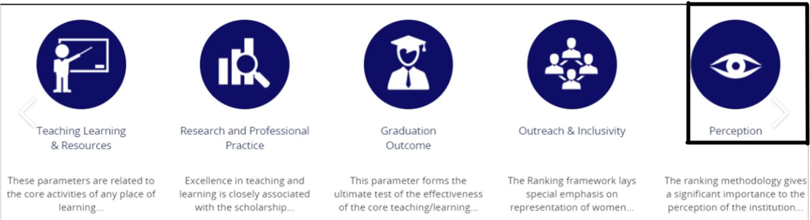
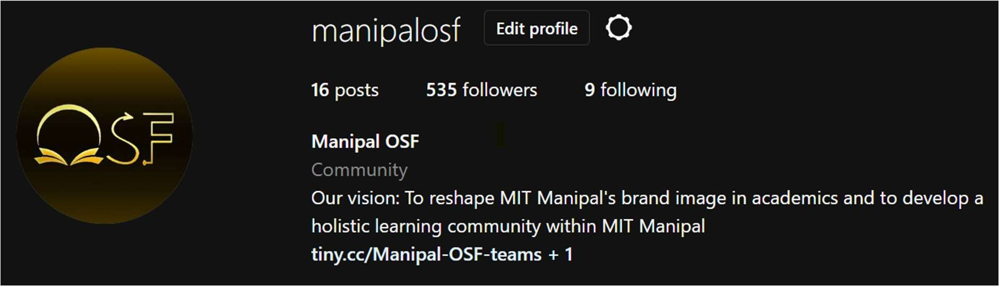
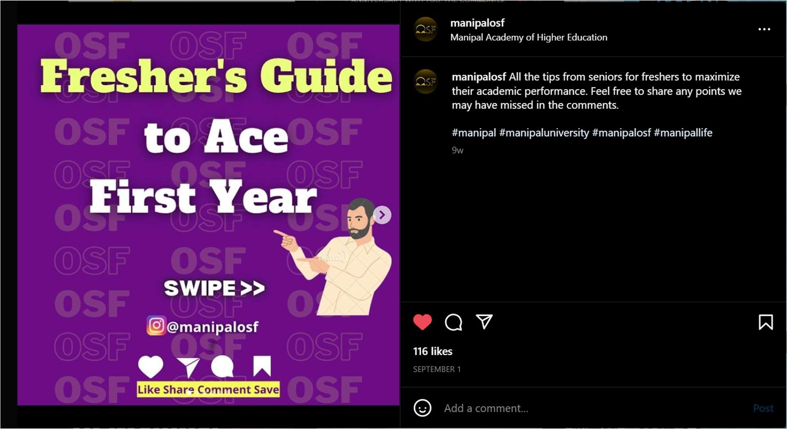
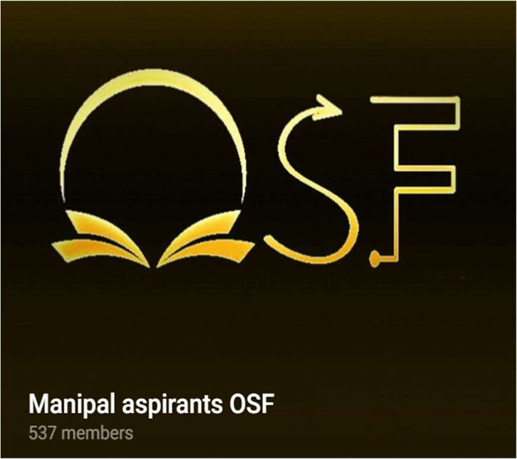
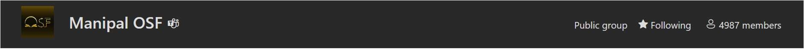
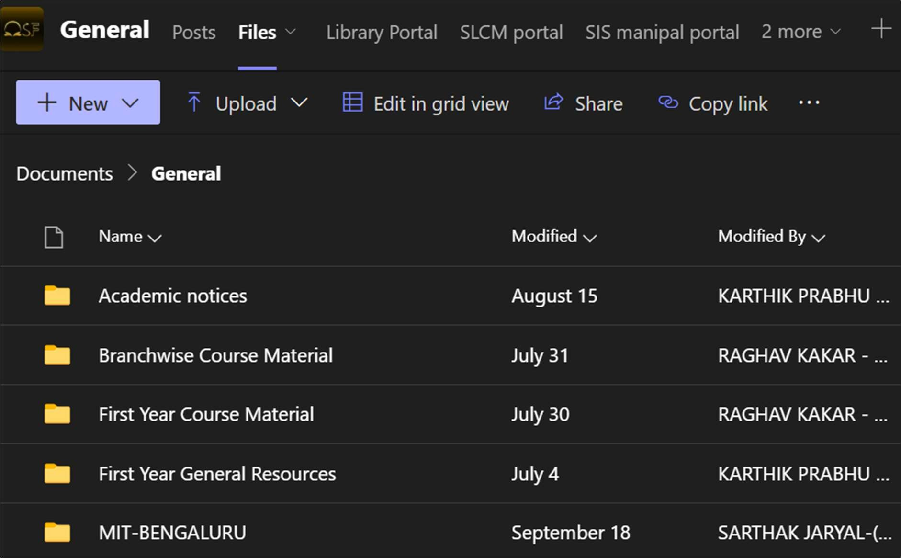
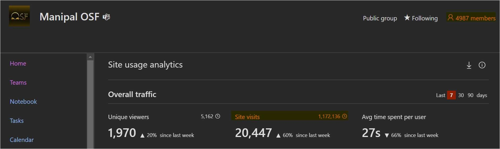
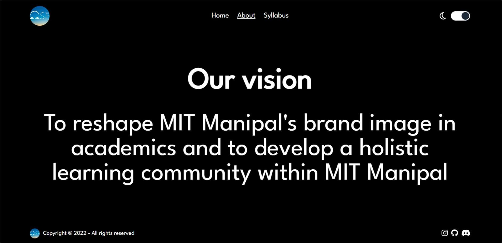
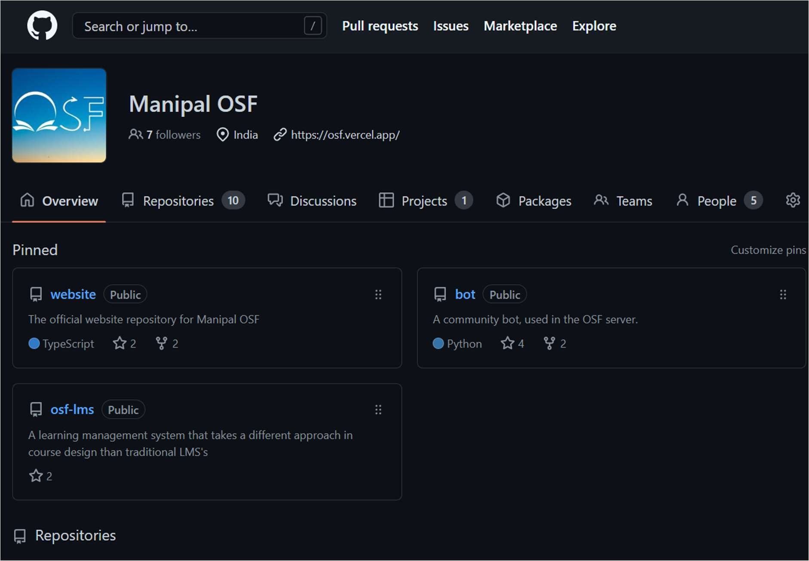

About Manipal OSF: Manipal Open Source Foundation, is an organization started in September 2021 by a group of first year students of MIT Manipal. It has since grown into one of the largest student-run organizations with a unique focus and Mission.
Mission:
To reshape MIT Manipal’s brand image in academics and to develop a holistic learning community within MIT Manipal.
Manipal OSF is dedicated to building MIT’s academic brand. Two factors which influence this branding on which Manipal OSF works on, are Perception and Performance.
Perception is an important aspect in demonstrating the academic capabilities within MIT.
A positive perception increases the ranking of the institute in almost all recognized rank boards.
It attracts admissions of committed and academically inclined students and incentivizes researchers and professors to work and collaborate with MIT.
A sense of pride is created among alumni as the perception of their Alma Mater increases, which increases their participation in alumni activities.

Over the long term it creates a positive feedback loop where motivated students join the Institute due to the increased perception, which furthers the perception and raises the value of the Institute overall.
Performance, especially of students within the Institute is an important aspect when building an academic brand.
It demonstrates the capabilities of the Institute to promote learning among students.
It demonstrates to prospective students MIT’s credibility and the importance it lends to student academic welfare.
It serves to create a better working relationship between faculty and students, motivating faculty to involve students in more rigorous work.
By boosting academic performance, the Institute can be more open to allowing students to take part in several programs and events, without worrying extensively about their performance. This serves to further the interests of the Institute and the students as they bring in laurels and experience.
It generates well placed, motivated alumni, who would also recognize MIT’s role in promoting their welfare and encourage them to give back to the Institute in multiple ways.
Manipal OSF understands the importance of a strong positive perception and performance to this institute, and we have done significant work to improve this.
Methodology:
The Multimedia Department works on using social media to increase awareness about several happenings in MIT, most notably in the academic, professional and curricular domains. Our model of providing valuable information with entertaining graphics helps create positive perception about what MIT has to offer for a student’s professional growth.
The multimedia department has worked on the following:
Creating an Instagram page for Manipal OSF with over 500+ followers

Through the Instagram page OSF created, building perception around Manipal’s academic and professional accomplishments became possible, and this was received well by our peers.
The fresher’s guide to ace first year was a post published, among others which communicated the importance of clearing academics to students, and how MIT, OSF and other resources could be used for it.


It was a well-received post and one of many which was made by the Multimedia department to increase academic perception among our peers.
The Relations Department (Formerly PR and Outreach) works on using grassroots approaches to modify academic perception. The Institute is heavily benefitted if students join, motivated about what MIT has to offer for their academic and professional development. Not only does it encourage parents to send their children to MIT, but it also prepares the students for a future of holistic learning.

The Academic Department furthers the MIT brand, by focusing on performance. One of the best ways to increase academic performance, is by providing a straight-forward route of information which is reliable and easily accessible. This was accomplished by using MS-Teams and SharePoint.
Through this medium, the Academic Department performed these tasks:
Created a repository of learning material for the course curriculum, for first years and second years.
Provided academic updates and timely notices.
Informed students about important events happening around MIT.
Access to Manipal portals for various activities in-built into teams.
Commissioned surveys and internal marks analyses for the benefit of students.
Through the tasks performed by the Academic Department, the following objectives were accomplished:
Increasing the academic performance of students.
Acquainting students with the learning process.
Providing a free and valuable service, which led to immense support of students for Manipal OSF.

Encouraging students to further their academic goals by providing straightforward routes of study.
Promoting interdisciplinary performance by providing access to resources of all branches to any MIT student.
Increasing the scope of inter-departmental co-operation by promoting presence of faculty on the platform.
Increasing the scope of inter-campus co-operation in academics by providing access to MIT-Bangalore students and faculty.
The SharePoint Site ended up being viewed more than 1 million times by students looking for academic support, only indicative of its success in influencing academic performance.

On a single day, files were viewed more than 10000 times, by more than 3000 unique viewers. These students used and trusted Manipal OSF to deliver on boosting their academic performance.
The Development Department also furthers the MIT brand through performance. It is a relatively new department with significant future scope. The Development Department is responsible for developing Manipal OSF’s website (Under development), with an emphasis on native code and JS frameworks.

Manipal OSF has a GitHub Organization already created, which hosts the website project and some other projects as well.
Through its tasks, the Development department intends on accomplishing the following objectives:
Design and serve a fully functional website for Manipal OSF, which can be used by Multimedia, Relations and Academic departments. It will be the front-face of Manipal OSF and increase perception and performance greatly.
Build an expansive development community in MIT Manipal using Discord, a social media network designed in part, for developers.
Teach standard coding and development practices through novel frameworks and platforms. (Delved into in Future scope)
Support Open-source projects with MIT students with an emphasis on collaborative efforts and reinforced learning.
Facilitate events, seminars, webinars and workshops to support development and cultivation of a coding mindset.
Enhance the academic performance of students through core development.

OSF 2.0
Introduction: OSF 2.0 is
conceptualized, let us now build it together! Integrating OSF services
across all domains while sticking through to our original vision is what
OSF 2.0 dreams to be!
What we want to build:
A better experience for members: OSF is known for the services we provide to our strong user-base. But OSFs greatest commitment is always to its club members. We want to build a unique club experience, unlike any club or organization in Manipal!
A new club experience: A great challenge which a club faces is poor communication among seniority levels. OSF 2.0 will change that. Implementing our pods experiences with our open committee initiative, OSF 2.0 will mitigate communication divides which currently exist.
Platforms:
WhatsApp: Implementing a new model for communication over instant messaging platforms which maximises productivity across all OSF departments.
MS-Teams: Figuring out the best methods of communication over Microsoft teams, be it virtual meetings, academic discussions or file sharing.
Discord: Analysing inefficiencies and communication divides over utilisation of Discord and ensuring maximum adoption.
Power platform: A member only database of member related information on the Microsoft Power platform, eliminating the need for repeated emails and reminders!
On-site: Regular pod meetings, with follow-up and implementation
More Fun: With OSF 2.0 we want to build the perception of OSF as a club worth joining. A club where one can grow, academically, professionally and personally.
Platforms:
WhatsApp: A discussion/debate community where individual members can express their opinions on the happenings of today, in a mutually respectful and expressive manner!
On site: Incorporating fun activities into our pod meets is an idea in mind. Having events which include both fun activities and learning outcomes is also a goal of OSF 2.0. We also plan on hosting informative stream/movie events exclusively for members!
MS-Teams: Virtual discussions and livestreams about technology, innovation and happenings in academia. Ice-breaker events among pods and member teams among others!
Member only opportunities: With OSF 2.0 we will introduce more member only opportunities.
Types of opportunities:
Workshops and consultations: Workshops which involve professionals in the industry, academia and research domains will be made available to OSF members
OSF portals: Access to OSF member portals built on the Microsoft experience.
Events: OSF is planning to host MIT wide events, of which organizing and conceptualising the events will be the role of the members of OSF.
Leadership and Management roles: OSFs unique club structure allows committed and enterprising individuals to take up strong leadership roles. Due to a flat hierarchy, these positions will be accessible to the enterprising member as early as their 1st year.
A Better User Experience: A major aspect of OSF is its ubiquitous course material management system, used by 5000+ students at MIT colleges. OSF 2.0 will build on this system to improve the UX and to better the usage patterns of this system.
OSF and Microsoft: OSF and Microsoft are a match made in heaven! OSF leveraged the Microsoft platform to build its content management system, and OSF 2.0 intends on utilizing this technology at a much higher level.
OSF is in the loop: You heard that right! OSF will soon integrate with Microsoft Loop to offer collaborative workspaces. For now, Loop OSF is in private preview. After discussions with relevant stakeholders, we will extend Loop to OSF users. The features of our loop program include:
CR integration: OSF connects with every CR, who is the leader of their workspace. Build up on your section’s workspace, where the students of every section can collaborate on study material and exchange ideas. Receive college updates and notices within the Loop from your CR. Loop can be accessed within MS Teams or as a stand-alone app on the Play store.
Integration with OSF UCR: Integration of Loop with our SharePoint repository, allowing you to access OSF files from one convenient location.
Use Microsoft Co-pilot: Use Co-pilot to build your own course breakdown, summarise your lecture material and get insights on your notes. Integrating the GPT-4 technology and Microsoft suite of services, OSF is offering a personalised one-stop solution to collaborative education.
PowerOSF: OSF 2.0 will bring the Power platform to Manipal OSF. The power platform holds a plethora of opportunities to enhance the OSF student experience. They include:
Power-automate workflows integrated into OSF file repositories.
PowerApps integration with OSF experiences.
PowerBI user analytics
Smoother OSF experiences using Power Pages
Chat with OSF PVA powered chatbots which can answer common student queries.
SharePoint customization: With OSF 2.0, our base SharePoint will be customized to include more relevant material. We intend to:
Build a Manipal newsletter within the SharePoint, which can be integrated as a widget on your mobile device.
Beautify the SharePoint site.
Increase the scope of OSF material and cover as many courses as possible.
MS Teams customization: With OSF 2.0, our MS Teams will be customized to include better learning experiences and integrations. These include:
Building chatbots within MS Teams which can draw from SharePoint file data, thus elevating your OSF experience.
Better classroom integration within Manipal OSF.
Loop component integration with MS Teams.
Involving Administration: OSF 2.0 will test novel backends for professors and administrative personnel, allowing them to provide updated course material to you with ease. This can be integrated into MS Teams, Loop and SharePoint, thus eliminating the lack of relevant or updated material issues commonly faced.